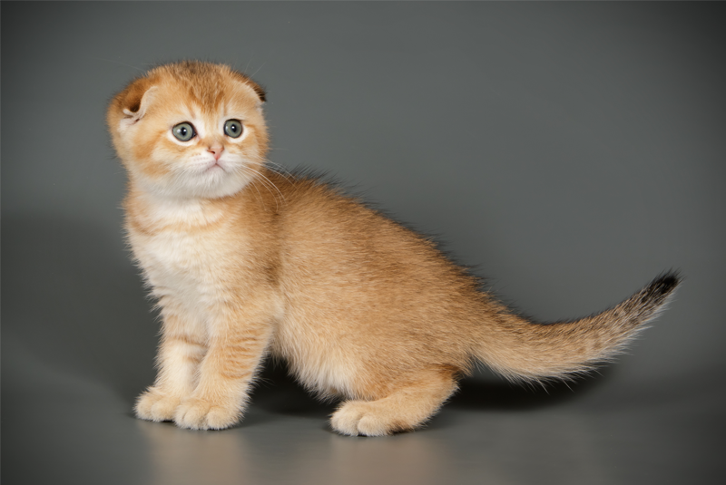

Котята из нашего питомника отдаются новым владельцам в возрасте не ранее 3-х месяцев , приученными к аккуратности, социально адаптированными. Самостоятельно кушают , приучены к лотку и когтеточке, а также с ветеринарным паспортом с отметкой о наличии прививок, клубными документами о чистопородном британском происхождении
Какие очаровательные, маленькие, пушистые комочки появляются на свет в нашем питомнике! Малыши удивляют нас каждый день: когда открывают глазки, начинают ползать, интересоваться игрушками. Невероятные эмоции испытываешь, взяв на руки это крохотное чудо, а оно начинает мурчать, как только ты его начинаешь гладить и разговаривать с этим инопланетным существом, под названием «кошка».
Непередаваемые ощущения от соприкосновения к мягкой шерстке, от удивленного взгляда прямо в душу! И любопытство, и ожидание заветного часа, когда малыши определятся, кто будет фолд, а кто страйт, ведь они все появляются на свет с прямыми ушками и только в 3 недели тайное становится явным, и они делятся на вислоухих и прямоухих — такова главная интрига нашей породы!
